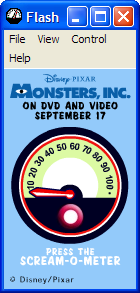

Monsters, Inc. Widget
Scream-o-Meter

DOWNLOAD
.exe file zipped (512 KB) (Windows)
.sit zipped (1.06 MB) (Mac OS)

 .exe file zipped (512 KB) (Windows).sit zipped (1.06 MB) (Mac OS)
.exe file zipped (512 KB) (Windows).sit zipped (1.06 MB) (Mac OS)